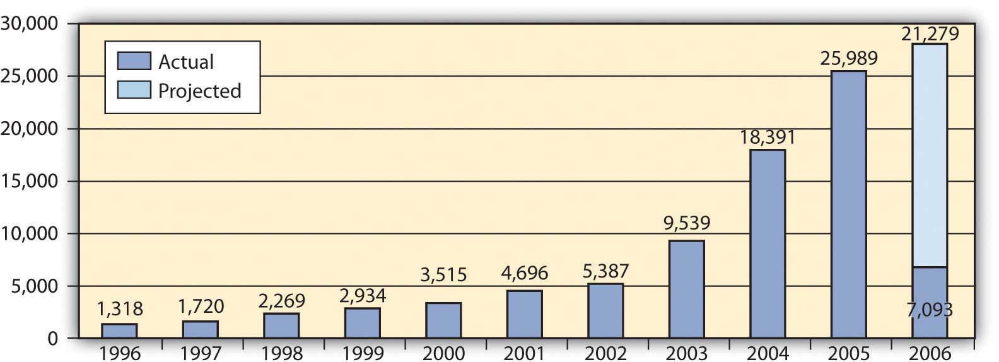

Now that you’ve chosen your home and figured out the financing, all that’s left to do is sign the papers, right?
Once you have found a house, you will make an offer to the seller, who will then accept or reject your offer. If the offer is rejected, you may try to negotiate with the seller or you may decide to forgo this purchase. If your offer is accepted, you and the seller will sign a formal agreement called a purchase and sale agreementThe legally binding agreement that sets the terms of the property transaction as agreed to by buyer and seller., specifying the terms of the sale. You will be required to pay a nonrefundable deposit, or earnest moneyA nonrefundable deposit paid by the buyer to the seller at the time of the purchase and sale agreement then applied toward the closing costs., when the purchase and sale agreement is signed. That money will be held in escrowA restricted account used for the earnest money until closing. or in a restricted account and then applied toward the closing costs at settlement.
The purchase and sale agreement will include the following terms and conditions:
Property disclosures of any problems with the property that must be legally disclosed, which vary by state, except that lead-paint disclosure is a federal mandate for any housing built before 1978.
After the purchase and sale agreement is signed, any conditions that it specified must be fulfilled before the closing date. If those conditions are the seller’s responsibility, you will want to be sure that they have been fulfilled before closing. Read all the documents before you sign them and get copies of everything you sign. Do not hesitate to ask questions. You will live with your mortgage, and your house, for a long time.
A house and property need care; even a new home will have repair and maintenance costs. These costs are now a part of your living expenses or operating budget.
If you have purchased a home that requires renovation or repair, you will decide how much of the work you can do immediately and how much can be done on an annual basis. A capital budget is helpful to project these capital expenditures and plan the income or savings to finance them. You can prioritize these costs by their urgency and by how they will be done.
For example, Sally and Chris just closed on an older home and are planning renovations. During the home inspection, they learned that the old stone foundation would need some work. They would like to install more energy-efficient windows and paint the walls and strip and refinish the old, wood floors.
Their first priority should be the foundation on which the house rests. The windows should be the next on the list, as they will not only provide comfort but also reduce the heating and cooling expenses. Cosmetic repairs such as painting and refinishing can be done later. The walls should be done first (in case any paint drips on the floors) and then the floors.
Renovations should increase the resale value of your home. It is tempting to customize renovations to suit your tastes and needs, but too much customization will make it more difficult to realize the value of those renovations when it comes time to sell. You will have a better chance of selling at a higher price if there is more demand for it, if it appeals to as many potential buyers as possible. The more customized or “quirky” it is, the less broad its appeal may be.
Two financing decisions may come up during the life of a mortgage: early paymentRedemption or paying back the mortgage loan before its maturity. and refinancingAttaining a new mortgage and simultaneously paying off the old mortgage.. Some mortgages have an early payment penaltyA cash penalty for the borrower for an early payment; this clause is not included in all mortgages. that fines the borrower for repaying the loan before it is due, but most do not. If your mortgage does not, you may be able to pay it off early (before maturity) either with a lump sum or by paying more than your required monthly payment and having the excess payment applied to your principal balance.
If you are thinking of paying off your mortgage with a lump sum, then you are weighing the value of your liquidity, the opportunity cost of giving up cash, against the cost of the remaining interest payments. The cost of giving up your cash is the loss of any investment return you may otherwise have from it. You would compare that to the cost of your mortgage, or your mortgage rate, less the tax benefit that it provides.
For example, suppose you can invest cash in a money market mutual fund (MMMF) that earns 7 percent. Your mortgage rate is 6 percent, and your tax rate is 25 percent. Your mortgage costs you 6 percent per year but saves you 25 percent of that in taxes, so your mortgage really only costs you 4.5 percent, or 75 percent of 6 percent. After taxes, your MMMF earns 5.25 percent, or 75 percent of 7 percent. Since your cash is worth more to you as a money market investment where it nets 5.25 percent than it costs you in mortgage interest (4.5 percent), you should leave it in the mutual fund and pay your mortgage incrementally as planned.
On the other hand, if your money market mutual fund earns 5 percent, but your mortgage rate is 8 percent and you are in the 25 percent tax bracket, then the real cost of your mortgage is 6 percent, which is more than your cash can earn. You would be better off using the cash to pay off your mortgage and eliminating that 6 percent interest cost.
You also need to weigh the use of your cash to pay off the mortgage versus other uses of that cash. For example, suppose you have some money saved. It is earning less than your after-tax mortgage interest, so you are thinking of paying down the mortgage. However, you also know that you will need a new car in two years. If you use that money to pay down the mortgage now, you won’t have it to pay for the car two years from now. You could get a car loan to buy the car, but the interest rate on that loan will be higher than the rate on your mortgage, and the interest on the car loan is not tax deductible. If paying off your mortgage debt forces you to use more expensive debt, then it is not worth it.
One way to pay down a mortgage early without sacrificing too much liquidity is by making a larger monthly payment. The excess over the required amount will be applied to your principal balance, which then decreases faster. Since you pay interest on the principal balance, reducing it more quickly would save you some interest expense. If you have had an increase in income, you may be able to do this fairly “painlessly,” but then again, there may be a better use for your increased income.
Over a mortgage as long as thirty years, that interest expense can be substantial—more than the original balance on the mortgage. However, that choice must be made in the context of the value of your alternatives.
You may think about refinancing your mortgage if better mortgage rates are available. Refinancing means borrowing a new debt or getting a new mortgage and repaying the old one. It involves closing costs: the lender will want an updated appraisal, a title search, and title insurance. It is valuable to refinance if the mortgage rate will be so much lower that your monthly payment will be substantially reduced. That in turn depends on the size of your mortgage balance.
If interest rates are low enough and your home has appreciated so that your equity has increased, you may be able to refinance and increase the principal balance on the new mortgage without increasing the monthly payment over your old monthly payment. If you do that, you are withdrawing equity from your house, but you are not allowing it to perform as an investment, that is to store your wealth.
If you would rather take gains from the house and invest them differently, that may be a good choice. But if you want to take gains from the house and use those for consumption, then you are reducing the investment returns on your home. You are also using nonrecurring income to finance recurring expenses, which is not sustainable. There is also a danger that property value will decrease and you will be left with a mortgage worth more than your home.
If you have a change of circumstances—for example, you lose your job in an economic downturn, or you have unexpected health care costs in your family—you may find that you are unable to meet your mortgage obligations as planned: to make the payments. A mortgage is secured by the property it financed. If you miss payments and default on your mortgage, the lender has recourse to foreclose on your property, to evict you and take possession of your home, and then to sell it or lease it to recover its investment. Under normal circumstances, lenders incur a cost in repossessing a home, and usually lose money in its resale. It may be possible to renegotiate terms of your mortgage to forestall foreclosure. You may want to consult with a legal representative, or to contact federal and/or state agencies for assistance.
You may believe you are having trouble meeting your mortgage obligations because they are not what you thought they would be. Lenders profit by lending. When you are borrowing, it is important to understand the terms of your loan. If those terms will adjust under certain conditions, you must understand what could happen to your payments and to the value of your home. It is your responsibility to understand these conditions. However, the lender has a responsibility to disclose the lending arrangement and all its costs, according to federal and state laws (which vary by state). If you believe that all conditions and terms of your mortgage were not fairly disclosed, you should contact your state banking regulator or the U.S Department of Housing and Urban Development (HUD). There are also consumer advocacy groups that will help clarify the laws and explore any legal recourse you may have.
Just as your lender has a legal obligation to be forthcoming and clear with you, you have an obligation to be truthful. If you have misrepresented or omitted facts on your mortgage application, you can be held liable for mortgage fraud. For example, if you have overstated your income, misled the lender about your employment or your intention to live in the house, or have understated your debts, you may be prosecuted for mortgage fraudIntentional misrepresentation or omission of facts perpetrated by a borrower in the process of obtaining mortgage financing.. Other forms of mortgage fraud are more elaborate, such as inflating the appraisal amount in order to borrow more.
Mortgage fraud can be perpetrated by the borrower, appraiser, or loan officer who originates the loan. Figure 9.15 "Mortgage Loan Fraud in the United States" shows mortgage fraud in the United States through 2006—had the graph continued, you would see even more fraud in 2007, just before the recent housing bubble burst.
Figure 9.15 Mortgage Loan Fraud in the United StatesFinancial Crimes Enforcement Network, “Mortgage Loan Fraud: An Industry Assessment based upon Suspicious Activity Report Analysis,” November 2006, http://www.fincen.gov/news_room/rp/reports/pdf/MortgageLoanFraud.pdf (accessed December 2, 2009).
During the recent housing bubble, mortgage fraud was aggravated by low interest rates that encouraged more borrowing and lending, often when it was less than prudent to do so.